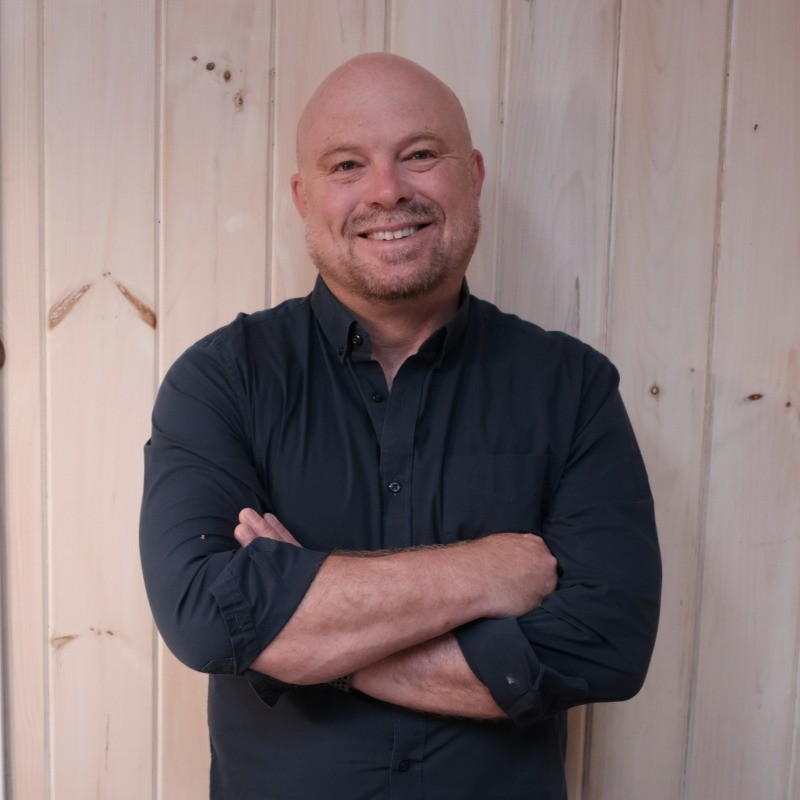
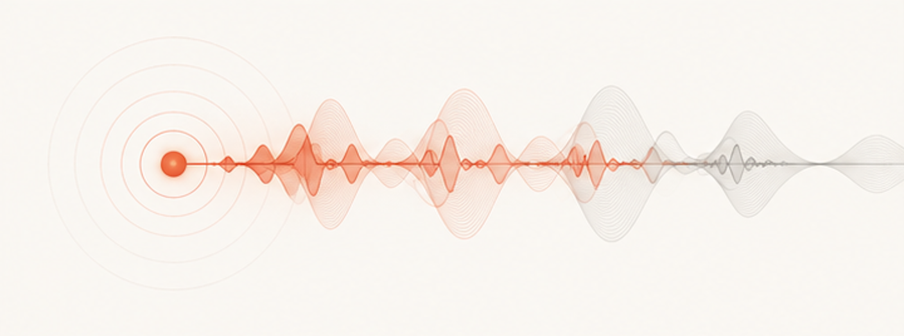
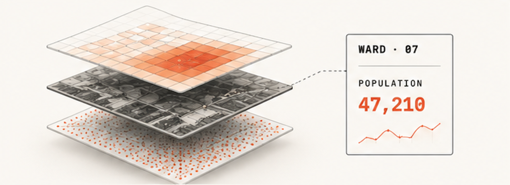
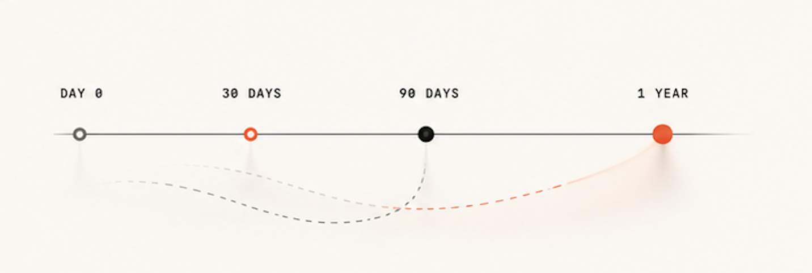

Recode Labs is a principal + practice. A single named partner sets the direction, and we work with a small team of experts: engineers, designers, and data scientists who have shipped systems in the places we build for.

Matt leads Recode Labs. Two decades building software for global development — from open-source platforms to production health systems deployed across Africa and South East Asia. Time 100. Founder. CEO. Now focused on building systems that would have been unimaginable without AI.

Speech, transcription, and low-attention UI for places where typing isn't possible — exam rooms, field visits, class rooms.
FHIR, HL7, and the connective tissue between clinics, ministries, and insurers. We build the pipes that will power agentic health systems.

From satellite imagery and census layers to a query a planner can run — "under-5s in Turkana by ward." Segmentation, population estimation, boundary tooling; exportable maps used in immunization campaigns.

Short, high-signal engagements for funders, ministries, and executive teams. Where can you apply AI for real transformation. What "AI-native" should actually mean inside your organization.